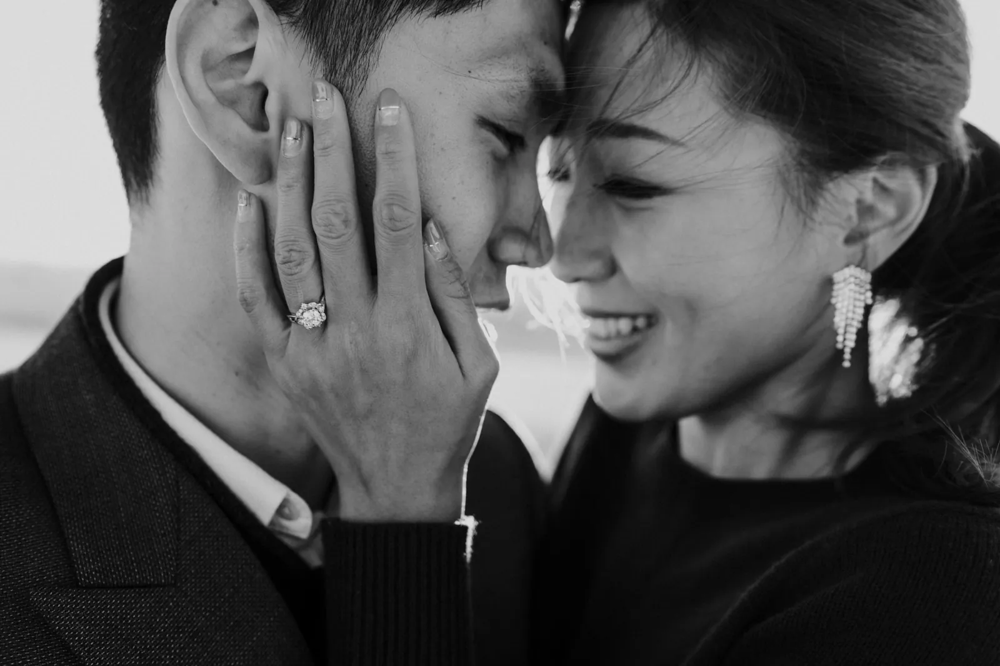
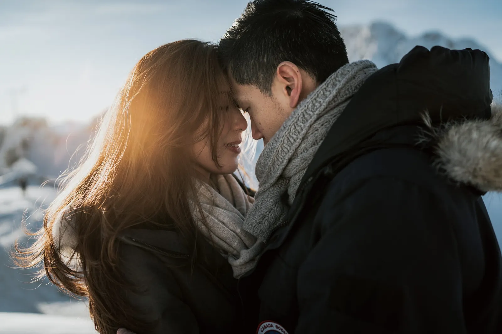
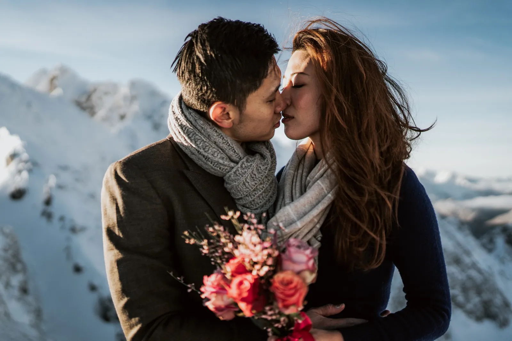
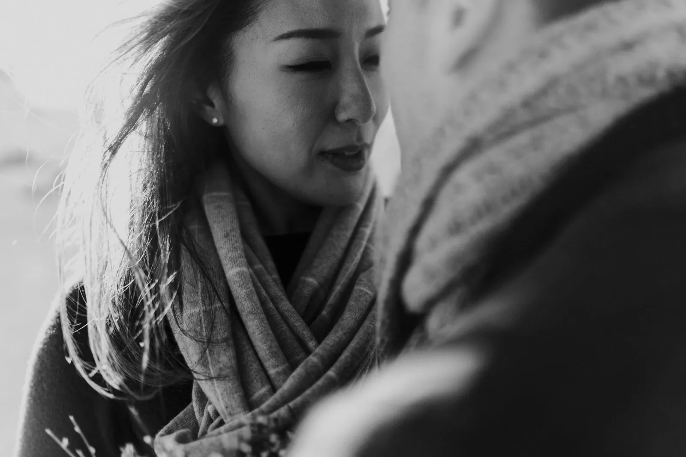
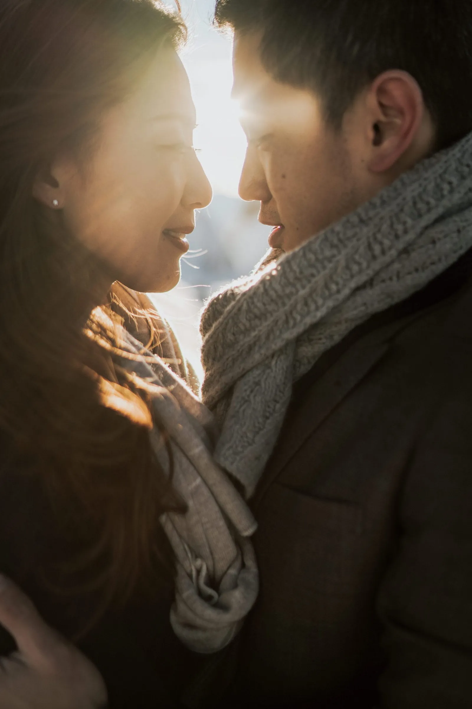
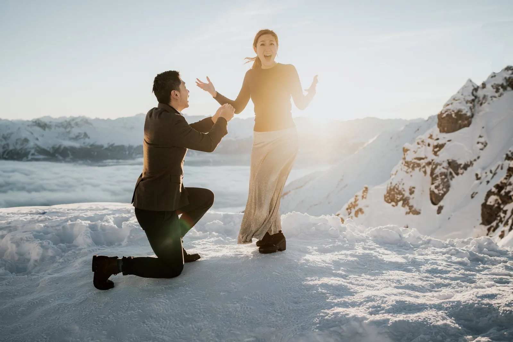
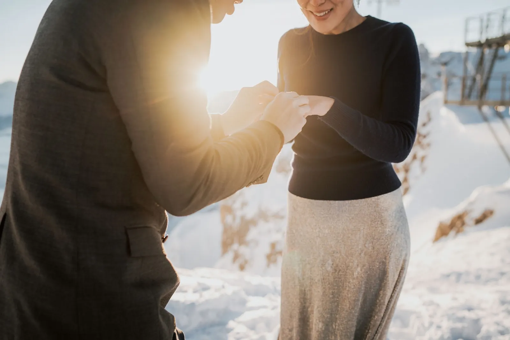
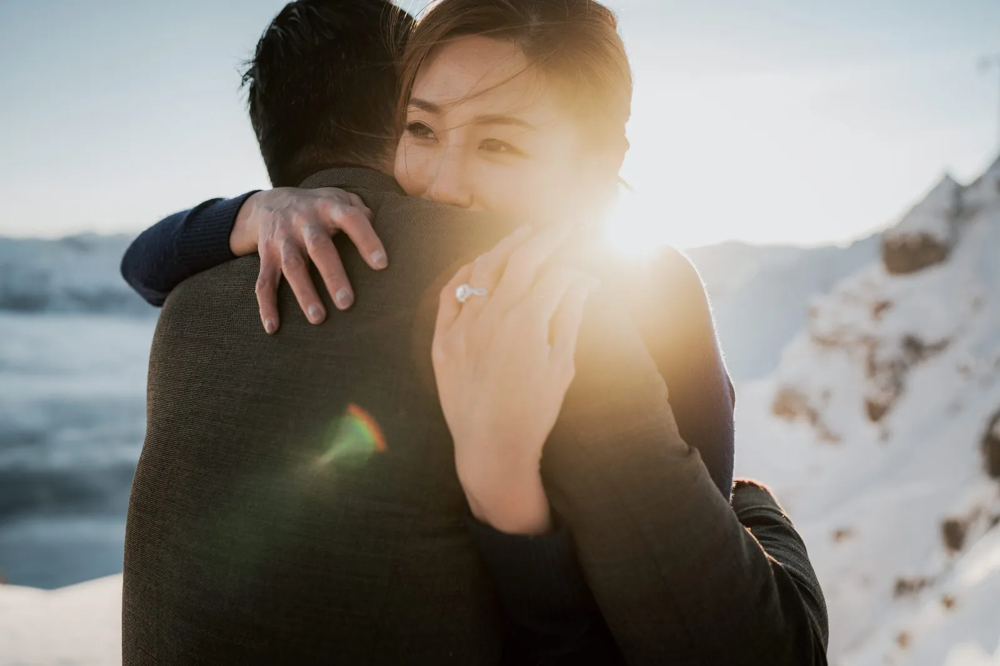
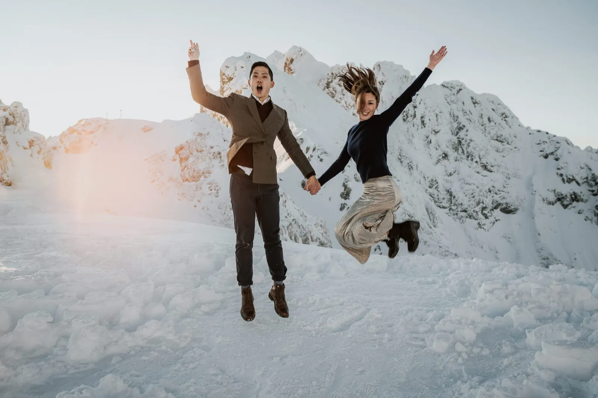

La domanda, o il sì che ancora risplende dopo — un mattino di fidanzamento nell’aria d’alta quota.
Un fidanzamento in montagna è la storia prima della storia — le ore vertiginose e incredule subito dopo un sì. Siamo saliti un poco, abbiamo riso molto e li abbiamo lasciati essere così alle prime armi come si sentivano.
È anche la prova perfetta — un’ora rilassata con la macchina che rende il giorno delle nozze naturale.
Pianificazione Dolomites Wedding Planner · Foto Blitzkneisser




Un sì detto ad alta voce, con solo le montagne a guardare.









Comunque immaginiate la vostra giornata — un’alba silenziosa, una vetta, un lago tutto per voi — la pianifichiamo intorno a voi due e la fotografiamo com’è stata davvero.
Usiamo cookie per statistiche anonime (Google Analytics tramite Google Tag Manager) per migliorare il sito. L'analisi parte solo con il tuo consenso. Privacy